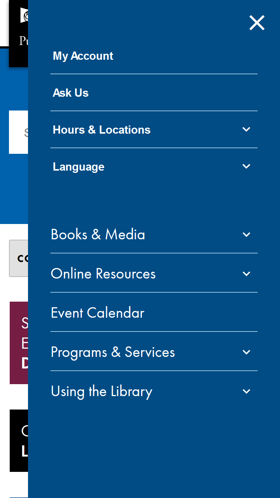

Impressions: Seattle Public Library - Mobile Edition
I'm posting on my second usability testing of The Seattle Public Library Website. This iteration of testing is focused on the website as experienced on a mobile device. The website is designed to be a gallery of services, resources, news and happenings at library, one of the Emerald City's great commons. I repeated my test on this site, using the concepts and learnings from the methods outlined in "Don’t Make Me Think!" by Steve Krug.
The testing
The Seattle Public Library homepage, as encountered on Apple iPhone 6-8, iOS11.The test script was reapplied:Download test script Rough script for SPL.org Usability Test (desktop & mobile).
Test conducted:
- A female student, aged 12 years, Spends most days doing homework and watching TV. Spends 10 hours a week online, on average. er favorite experiences on the web include browsing educational websites including Schoology.com, Amplify.com, and for fun, Bored Button.com, coolmathgames.com, Netflix.com, and Disney+.
- A female student, aged 14 years. Fan of games likeAnimal Crossingand of hunting for meme.
- A female musical and stage artist/educator. She spends up to 28 hours per week online, mostly in supply procurement on Google, Amazon or social media websites.
- Each was able to immediately identify the site and to describe the resources she was expecting to find available.  The homepage view with hamburger active.
- Each was able to view the choices and resources, using the prominent directional "hamburger" button on the upper right of the display.
- Each participant attempted to find the Harry Potter books, per the tasking. None succeeded. In contrast with the initial desktop test user group, this group didn't seem to find saliency in the tasking. This may indicate an opportunity to improve the test, more than to improve the website.
- Each participant was asked to try and locate physical room reservations procedures or library room resources - without using the prominent "search" field. All but one, the 14 year old, failed to complete the task. The 14 year old, having completed the task, remarked that it wasn't the most intuitive experience...and did not specify any recommendations as to how it could be improved.
Observations and Recommendations
I think my administration of the test needs to be improved and better modified for a new group of test users. I can't be sure how much personal agency each test user had, or how much attention was given or witheld as a result. Failure to achieve more in the tasking seems less related with malfunction or poor design of the website. I would attribute the surprisingly lacklustre results to poor test design and application. A difficult but imporant lesson learned.